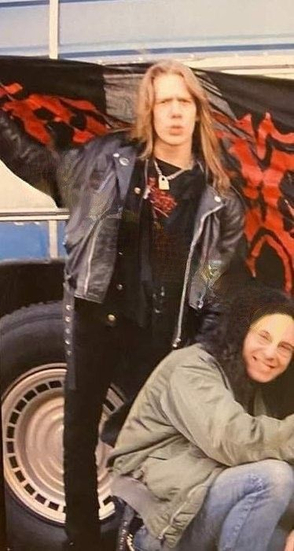

Durante su adolescencia, su interés por la música creció tanto que formó una banda de black metal llamada Superior (inicialmente llamada Absurdum ) a los 14 años, aunque había participado en otras bandas que no llegaron a ninguna parte. Se crearon dos demos para Superior, incluyendo "Metamorphis" en 1996 e "Illustrare Ad Infernali" en 1997, así como un demo inédito de '95 llamado "Anno Dracule (Dark Wampyrious Consipracy)". Esta banda, en la que usaba pintura facial similar a la de Ghost en la actualidad, fue fruto de su interpretación de personajes ficticios, siendo su nombre en la banda Don Juan Leviathan. También ensayó con otra banda de black metal llamada Malign , pero nunca fue un miembro oficial. Para 1998, Forge formó la banda Repugnant , bajo el nombre más conocido de Mary Goore . Él, junto con otros miembros de la banda, hizo algunos EP y demos antes de finalizar el primer álbum "Epitome of Darkness" en 2002. Sin embargo, el álbum nunca fue lanzado oficialmente hasta 2004 por Soulseller Records . En ese momento, Tobias declaró más tarde que había querido que Repugnant fuera comparable a bandas como Amon Amarth (que finalmente se unió a ellos como teloneros en el Imperatour ), pero menciona que sus sueños no pudieron cumplirse debido a la inmadurez en ese momento. Biografía Adolescencia Adultez